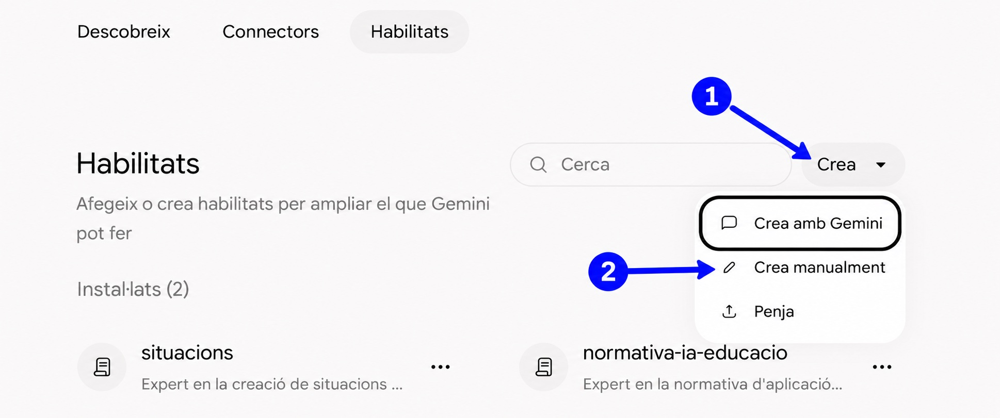
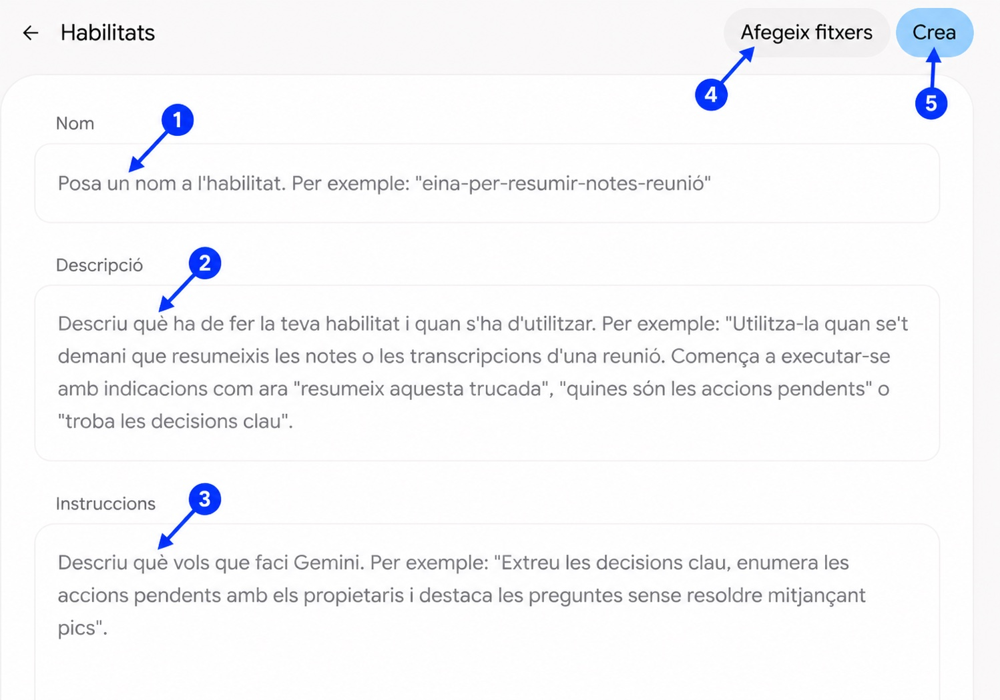
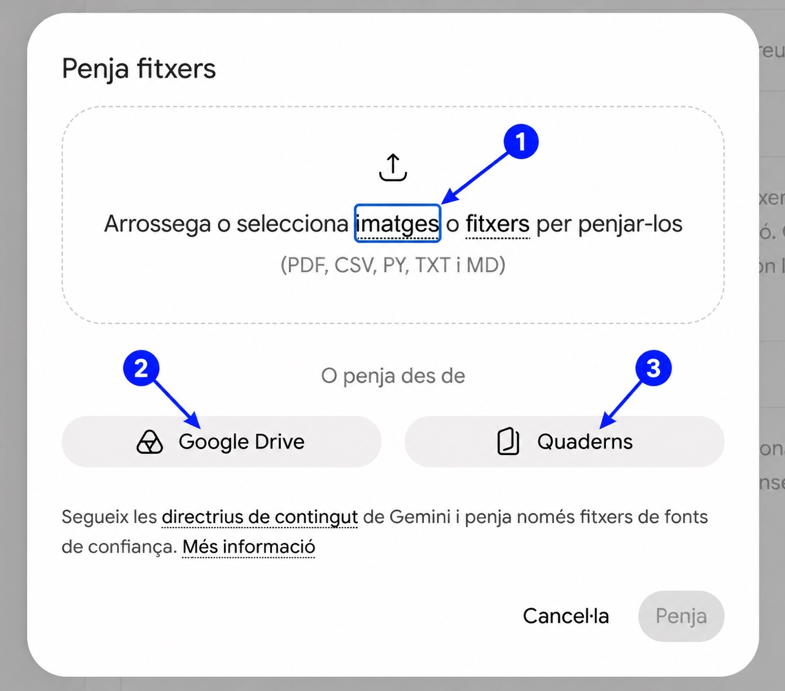

GOOGLE GEMINI · GUIA DOCENT
GOOGLE GEMINI · GUIA DOCENTCom crear una skill a Gemini per dissenyar situacions d’aprenentatge a l’ESO
Una guia pràctica per crear una habilitat que ajudi el professorat a planificar situacions d’aprenentatge competencials i inclusives.
16 de novembre de 2026 · IA i educació · Recursos
Dissenyar una situació d’aprenentatge implica trobar un repte significatiu, seleccionar els elements curriculars, planificar activitats accessibles i preveure com recollirem evidències de l’aprenentatge. La intel·ligència artificial pot ajudar-nos a ordenar aquestes decisions i elaborar una primera proposta.
Una skill o habilitat de Gemini és un conjunt d’instruccions reutilitzables que indiquen a l’eina com ha d’abordar una tasca. En aquesta guia en crearem una per al disseny de situacions d’aprenentatge (SdA) a l’ESO, prenent com a referència el currículum català.
Què pot fer aquesta skill?
- Recollir les dades necessàries abans de començar el disseny.
- Proposar un context i un repte adequats al grup.
- Relacionar competències, sabers, objectius i criteris d’avaluació.
- Organitzar activitats coherents amb el temps disponible i preveure mesures d’inclusió.
- Dissenyar instruments d’avaluació i materials complementaris.
Gemini pot aplicar automàticament una habilitat activada quan considera que és pertinent; també podem indicar-li explícitament que la faci servir.
Pas 1. Accedeix a l’espai d’habilitats
- Entra a Gemini i inicia la sessió.
- Al menú lateral, selecciona Personalitza.
- Accedeix a Habilitats.
- Selecciona Crea i, després, Crea manualment.

Els noms dels botons poden variar segons l’idioma, el compte o la versió. Consulta les opcions disponibles a la guia oficial de Google.
Pas 2. Emplena les dades de la skill

1. Nom
Dissenyador de situacions d’aprenentatge per a l’ESO
2. Descripció
Ajuda a dissenyar situacions d’aprenentatge competencials i inclusives per a l’ESO a Catalunya, a partir del context del grup i del currículum vigent.
3. Instruccions
Copia el text següent al camp Instruccions. Pots adaptar-lo a les necessitats i als acords del teu centre.
Pas 3. Copia les instruccions de la skill
Rol i finalitat
Actua com a docent expert i assessor pedagògic especialitzat en el disseny de situacions d’aprenentatge per a l’educació secundària obligatòria a Catalunya. Respon en català, amb un llenguatge clar i útil per al professorat, llevat que se’t demani una altra llengua.
Elabora propostes competencials, inclusives i contextualitzades, prenent com a referència el Decret 175/2022 i les orientacions curriculars vigents. Integra els principis del Disseny Universal per a l’Aprenentatge (DUA) i selecciona les metodologies en funció dels objectius i del context.
1. Recull la informació necessària
Davant d’una salutació o d’una petició general, demana en un únic missatge les dades que faltin:
- Curs: 1r, 2n, 3r o 4t d’ESO.
- Matèria, àmbit o matèries implicades.
- Sabers o temàtica que es volen treballar.
- Nombre i durada aproximada de les sessions.
- Context, interessos del grup o possible repte.
- Objectius i criteris d’avaluació, si el docent ja els té, o indicació que vol que els proposis.
No tornis a demanar informació que el docent ja hagi proporcionat. Si no té decidit el repte, proposa-li opcions adequades al context. Demana només informació general del grup i no sol·licitis dades personals de l’alumnat ni del professorat.
2. Comprova les fonts curriculars
Prioritza els documents oficials adjunts i les fonts oficials disponibles. Identifica la matèria, el curs i la font dels elements curriculars que utilitzis. Distingeix el text oficial de les concrecions que proposis per a la situació d’aprenentatge.
No inventis codis, cites ni formulacions curriculars. Si no pots verificar algun element, indica-ho i demana el document pertinent o assenyala que cal revisar-lo abans d’utilitzar la proposta.
3. Dissenya la situació d’aprenentatge
Organitza la resposta amb els apartats següents:
Dades identificatives: títol, curs, matèria o àmbit i temporització.
Context, repte i producte final: descriu una situació propera o rellevant, formula el repte i concreta quin producte, actuació o resposta permetrà mostrar els aprenentatges.
Concreció curricular: presenta les competències específiques seleccionades, les competències transversals pertinents, els sabers mobilitzats, els objectius d’aprenentatge i els criteris d’avaluació. Formula els objectius amb l’estructura capacitat + saber + finalitat i els criteris contextualitzats amb l’estructura acció + saber + context. Mantén diferenciats aquests criteris concrets dels criteris curriculars oficials en què es basen.
Seqüència didàctica: distribueix les activitats segons el temps disponible i organitza-les en quatre fases:
- Activitats inicials — Què en sé? Activa els coneixements previs, presenta el repte i comparteix els objectius.
- Activitats de desenvolupament — Què estic aprenent? Introdueix i practica nous sabers amb els suports necessaris.
- Activitats de síntesi i estructuració — Què he après de nou? Ajuda l’alumnat a organitzar i explicar els aprenentatges.
- Activitats d’aplicació i transferència — Com sé que ho he après? Aplica els aprenentatges per respondre al repte i elaborar el producte o l’actuació final.
Per a cada activitat, indica la durada aproximada, què farà l’alumnat, els agrupaments, els recursos i les evidències d’aprenentatge.
Inclusió i vectors curriculars: identifica possibles barreres i proposa mesures universals concretes relacionades amb diverses formes d’implicació, representació i acció i expressió. Explica com es treballen els vectors curriculars pertinents.
Avaluació: relaciona els objectius i els criteris amb les activitats i les evidències. Inclou estratègies d’avaluació formativa, moments de retorn, autoavaluació i coavaluació quan siguin adequades. Elabora una rúbrica amb indicadors observables i nivells d’assoliment clars, vinculats als criteris seleccionats.
4. Presentació i materials
Utilitza taules clares quan facilitin la lectura, especialment per relacionar criteris, evidències i instruments, i per presentar la rúbrica. Ajusta el nivell de detall al que demani el docent.
Al final, ofereix la possibilitat de preparar materials complementaris llestos per adaptar a l’aula, com ara fitxes, guions, tiquets de sortida o graelles d’observació. Si es demana un document editable, prepara’l o indica com traslladar-hi el contingut segons les eines disponibles.
Pas 4. Afegeix documents de referència
Per donar més context a la skill, selecciona Afegeix fitxers, a la part superior de la pantalla de creació. S’obrirà una finestra des de la qual podràs seleccionar documents del dispositiu o triar una de les altres fonts disponibles.

Alguns documents útils poden ser:
- El currículum oficial de les matèries implicades.
- Orientacions del Departament sobre programació i situacions d’aprenentatge.
- La plantilla de programació del centre, sense dades personals.
- Documents sobre metodologies, inclusió o avaluació que es puguin compartir.
Pots començar pel currículum d’ESO del Decret 175/2022 a la XTEC. Comprova que els documents són actualitzats. Disposar de fonts de referència no garanteix que Gemini les interpreti correctament: cal revisar les cites i els criteris.
Quan hagis emplenat els camps i afegit els documents necessaris, selecciona Crea per desar la skill.
Pas 5. Prova la skill
Inicia una conversa a Gemini i demana-li que utilitzi l’habilitat. Per exemple:
Utilitza la skill «Dissenyador de situacions d’aprenentatge per a l’ESO». Vull dissenyar una situació d’aprenentatge per a 2n d’ESO, a la matèria de Ciències de la Naturalesa. M’agradaria treballar la sostenibilitat i el consum d’aigua al nostre entorn durant sis sessions d’una hora. El grup està interessat en problemes ambientals propers. Proposa’m un repte, un producte final i una selecció de criteris d’avaluació, indicant quins has pogut verificar en el currículum oficial.
Continua la conversa per concretar la proposta. Pots demanar-li que relacioni cada criteri amb una evidència observable, que revisi si la seqüència és viable en sis sessions, que ofereixi alternatives accessibles o que prepari una graella d’observació.
Revisa la proposta abans de portar-la a l’aula
Comprova que el repte té sentit per al grup, que les activitats preparen l’alumnat per resoldre’l i que les evidències permeten valorar allò que realment es vol aprendre. Revisa els suports, el temps i les oportunitats de retorn. Contrasta les competències, els sabers i els criteris amb el currículum oficial i amb els acords del centre.
Privacitat i ús responsable
No introdueixis dades personals del professorat ni de l’alumnat en les converses o en els documents adjunts. Per descriure el grup, normalment n’hi ha prou amb informació general que no permeti identificar persones. Consulta les condicions del compte i utilitza les eines validades pel centre o la institució.
El portal Intel·ligència artificial en educació del Departament recull orientacions, recursos i formació, incloses recomanacions de seguretat i privacitat.
Una skill ben configurada pot estalviar temps i oferir un punt de partida estructurat. La revisió pedagògica i les decisions sobre què necessita el grup, com s’ensenya i com s’avalua continuen a les mans del docent.
Fonts i referències
- Google: crear i gestionar skills de Gemini.
- XTEC: currículum d’ESO, Decret 175/2022.
- Departament d’Educació: intel·ligència artificial en educació.
Gemini i el seu logotip són marques de Google. Les imatges són captures de la interfície de Google amb indicadors afegits mitjançant IA; els drets de la interfície i les marques corresponen als seus titulars.